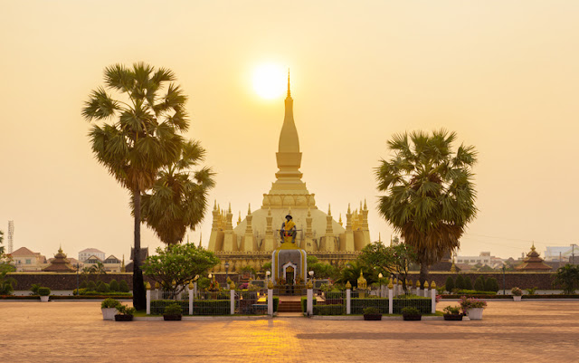

I.ແຫຼ່ງທ່ອງທ່ຽງ ພະທາດຫຼວງວຽງຈັນ.
👉ພະທາດຫຼວງ ວຽງຈັນ
ພະທາດຫຼວງຕັ້ງຢູ່ທາງທິດຕະເວັນອອກສຽງເໜືອຂອງປະຕູໄຊ
ຫາກໄປທ່ຽວວຽງຈັນຕ້ອງບໍ່ພາດໄປຢ້ຽມຊົມພະທາດຫຼວງ
ອີກຊື່ວ່າ ພະເຈດີໂລກະຈຸລາມນີ ປູຊະນີຍະສະຖານອັນສຳຄັນອາຍຸນັບພັນປີທີ່ມີຄຸນຄ່າທາງປະຫວັດສາດ ສີລະປະ ແລະ ວັດທະນະທຳຂອງລາວ
👉ພະທາດຫລວງ (Pra Thatluang) ຫລື ພຣະທາດຫລວງວຽງຈັນ
ຕັ້ງຢູ່ສົ້ນສຸດທາງທິດຕາເວັນ ອອກຂອງຖະໜົນທາດຫຼວງ, ບ້ານທາດຫຼວງ,
ເມືອງໄຊເສດຖາ, ນະຄອນຫຼວງວຽງຈັນ. ເປັນປູຊະນິຍະສະຖານບູຮານອັນເປັນສັນຍະລັກຂອງປະເທດລາວ
ແລະ ເປັນມິ່ງຂວັນຂອງປະ ຊາຊົນລາວກໍຄືຊາວພຸດທົ່ວທັງປະເທດ. ຕາມຕຳນານອຸລັງຄະທາດ,
ພຣະທາດຫຼວງຖືກສ້າງຂຶ້ນເທື່ອທີໜຶ່ງໃນປີ ພ.ສ 236 (ກ່ອນ ຄ.ສ 307 ປີ) ສະໄໝສ້າງເມືອງວຽງຈັນ,
ໂດຍພຣະເຈົ້າ ຈັນທະບຸຣີ ປະສິດທິຈັກ ພ້ອມດ້ວຍພຣະອໍຣະຫັນຫ້າອົງ (ພຣະສົງລາວ) ທີ່ກັບມາຈາກການສຶກສາທຳມະ
ແລະ ໄດ້ນຳເອົາພຣະບໍຣົມມະທາດ (ກະດູກ) ຂອງພຣະພຸດທະເຈົ້າມາຈາກປະເທດອິນເດຍ. ການສ້າງພຣະທາດຫຼວງເທື່ອທຳອິດນັ້ນພຽງແຕ່ກໍ່ເປັນອຸມຸງຫິນກວມ
ພຣະບໍຣົມມະທາດເທົ່ານັ້ນ ແລະ ມີຮູບສີ່ລ່ຽມ, ກວ້າງດ້ານລະຫ້າວາ, ໜາສອງວາ ແລະ ສູງສີ່ວາສາມສອກ.
👉ປີ ຄ.ສ 1566 ພາຍຫຼັງການຍ້າຍ ນະຄອນຫຼວງຈາກ ຫຼວງພຣະບາງ
ລົງມາຕັ້ງຢູ່ວຽງຈັນ(ຄ.ສ 1560) ພະເຈົ້າໄຊຍະເສດຖາທິລາດ ໄດ້ກໍ່ສ້າງພະທາດ
ຫຼວງເປັນເທື່ອທີສອງ ແລະ ໄດ້ສ້າງ ເປັນທາດໃຫຍ່ ກວມອຸມຸງຫິນອັນເກົ່າ ເຊິ່ງມີພະທາດນ້ອຍ
ສາມສິບອົງ ອ້ອມພະທາດໃຫຍ່, ເປັນບໍລິວານ ພ້ອມດ້ວຍກົມມະລຽນ ແລະ ຫໍໄຫວ້ທັງສີ່ທິດ.
ໃນທາດນ້ອຍແຕ່ລະອົງນັ້ນ ເພິ່ນ ໄດ້ເອົາຄຳໜັກສີ່ບາດ ຫຼໍ່ເປັນທາດນ້ອຍໆ ບັນຈຸໄວ້ເຊິ່ງມີໃບລານທີ່ ເຮັດດ້ວຍຄຳຍາວສອກປາຍ (ສອກກຳ) ແລະ
ຈາລຶກພາສາບາລີ ດ້ວຍອັກສອນທຳຮອງໄວ້ທຸກອົງ. ເມື່ອກໍ່ສ້າງສຳເລັດ ເພິ່ນໄດ້ໃສ່ຊື່ພະທາດວ່າ ”ພະເຈດີໂລກະຈຸລາມະນີ” ແຕ່ຄົນສ່ວນຫຼາຍມັກເອິ້ນວ່າ
“ທາດຫຼວງ” ເຊິ່ງມີຄວາມໝາຍວ່າ ທາດທີ່ໃຫຍ່. ພາຍຫຼັງສ້າງສຳເລັດລົງໃນປີ ຄ.ສ 1570 ຍັງບໍ່ທັນໄດ້ສະຫຼອງ, ພະເຈົ້າໄຊຍະເສດຖາທິລາດ ໄດ້ເດິນທາງລົງໄປເມືອງອັດຕະປື
ແລ້ວຫາຍສາບສູນໄປໃນປີ ຄ.ສ 1571.
👉ພະທາດຫຼວງສູງ 45 ແມັດ, ມີໃບສີມາອ້ອມ 228 ໃບ,
ມີບໍລິວານ (ທາດນ້ອຍ) 30 ອົງອ້ອມຮອບ ເອິ້ນວ່າ: “ປາລະມີສາມສິບທັດ”,
ຕີນພະທາດ ແຕ່ດ້ານຕາເວັນອອກຫາດ້ານຕາເວັນຕົກຍາວ 69 ແມັດ,
ແຕ່ດ້ານເໜືອເຖິງດ້ານໃຕ້ຍາວ 68 ແມັດ ແລະ ກົມມະລຽນດ້ານນອກອ້ອມພະທາດຫຼວງ ແຕ່ລະດ້ານຍາວ 91.75 ແມັດ
ກົດບ່ອນນີ້ເພື່ອກັບຄືນ